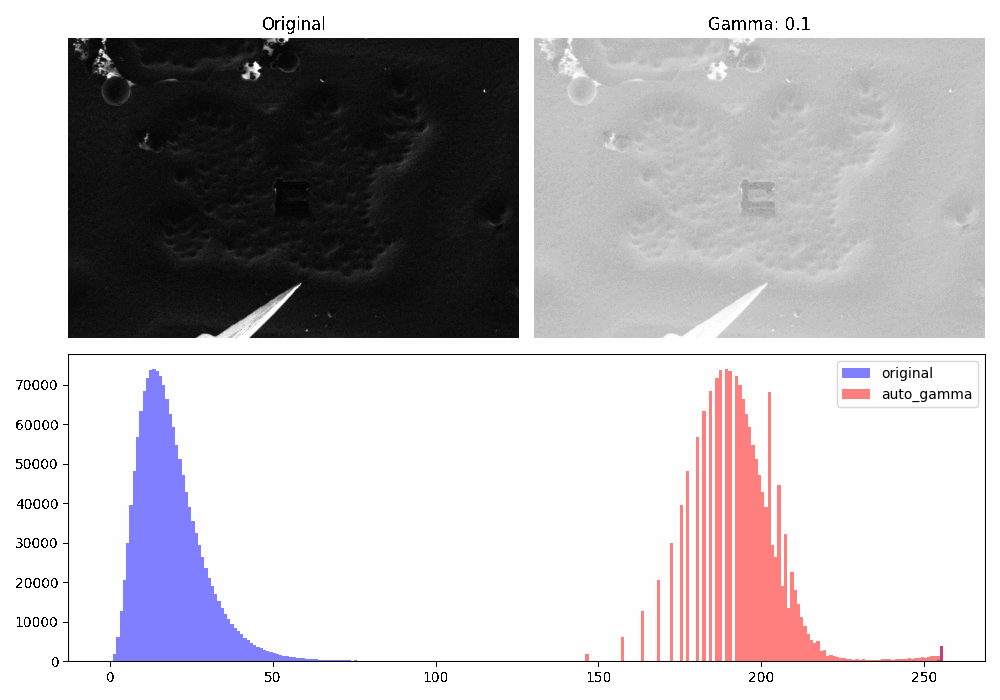
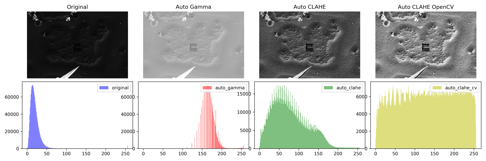
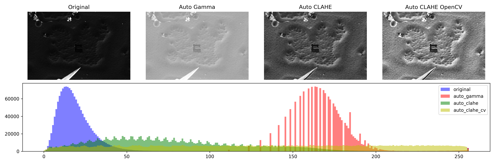
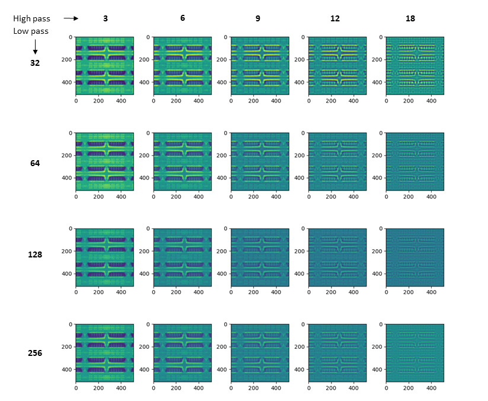
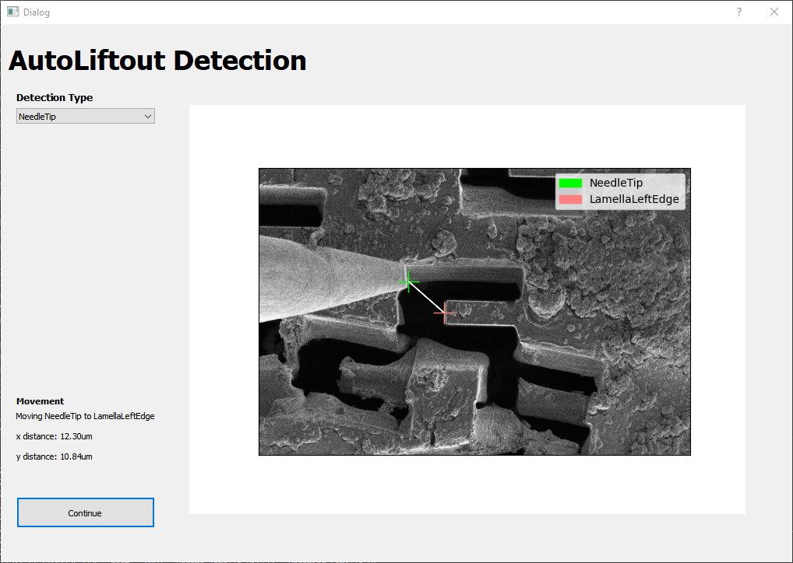
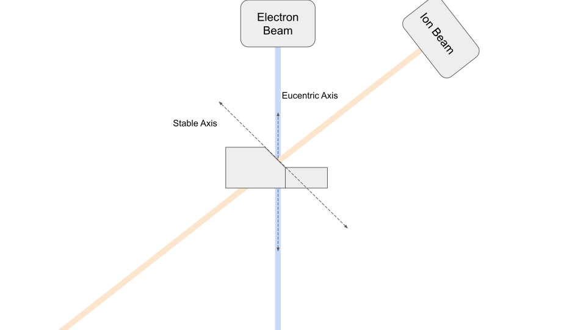
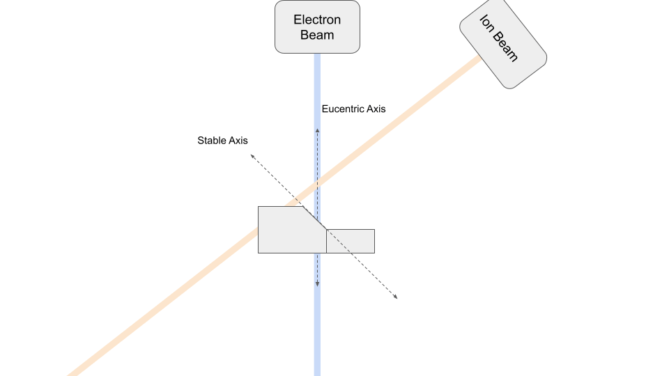

Automation
OpenFIBSEM provides a number of modules to support automation.
Image Processing
We provide a number of image processing functions to support automation. These are available in fibsem.imaging or fibsem.acquire.
AutoGamma:
Adjusting the gamma of the image can improve the contrast of the image. This is useful for aligning images, and can be used to improve the contrast of the image for feature detection. The following figure shows the effect of adjusting the gamma of the image. When the autogamma flag is enabled in ImageSettings the gamma of the images taken will be automatically adjusted with this method.
 Gamma Adjustment
AutoCLAHE:
Contrast Limited Adaptive Histogram Equalization (CLAHE) is a method for improving the contrast of an image. When the autoclahe flag is enabled in ImageSettings the gamma of the images taken will be automatically adjusted with this method. AutoCLAHE has many parameters that can be tuned. The following figures shows the difference between the different autogamma methods.
 AutoGamma Functions
 AutoGamma Functions
Alignment
The alignment module contains functions are aligning reference images, and tools and parameters for adjusting these alignments.
WIP: images
Cross Correlation
The primary alignment method is fourier cross-correlation to a reference image. The following helper function provides the the methods for alignment, and the required movements, as well as parameters for tuning.
def align_using_reference_images(
microscope: SdbMicroscopeClient,
settings: MicroscopeSettings,
ref_image: AdornedImage,
new_image: AdornedImage,
ref_mask: np.ndarray = None,
xcorr_limit: int = None,
constrain_vertical: bool = False,
beam_shift: bool = False,
lp_px: int = 128,
hp_px: int = 8,
sigma: int = 6,
) -> bool:
"""Align new image to reference image using crosscorrelation
Args:
microscope (SdbMicroscopeClient): microscope client
settings (MicroscopeSettings): microscope settings
ref_image (AdornedImage): reference image
new_image (AdornedImage): new image
ref_mask (np.ndarray, optional): reference mask. Defaults to None.
xcorr_limit (int, optional): crosscorrelation limit. Defaults to None.
constrain_vertical (bool, optional): constrain vertical movement. Defaults to False.
beam_shift (bool, optional): use beam shift. Defaults to False.
lp_px (int, optional): lowpass filter size. Defaults to 128.
hp_px (int, optional): highpass filter size. Defaults to 8.
sigma (int, optional): gaussian filter sigma. Defaults to 6.
Returns:
bool: True if alignment was successful, False otherwise
"""
In order to tune the alignment the user can adjust the following:
Filtering
The cross correlation alignment can be tuned by adjusting the bandpass filters; lowpass, highpass; and sigma. These filters are applied in fourier space.
- lowpass: upper pixel distance bound
- highpass: lower pixel distance bound
- sigma: blur applied to bandpass mask boundary
The effect of these filters on the bandpass mask is shown below:

Masking
We provide a number of masking utilities:
circle_mask: mask a circular area of the image.bandpass_mask: mask a bandpass area of the image (donut)rect_mask: mask a rectangular area of the imagearea_mask: mask quarters of the image specified by left, right, upper, and lower paramsvertical_mask: mask a central vertical area of the imageinvert: invert the mask
These masks can be passed to the ref_maskfor use in the alignment, and are available in fibsem.imaging.masks. Many of these masking functions contain additional parameters, so please see the implementation for details.
Movement
By default, the function will move the stage to align the reference image. The following parameters adjust this movement.
constrain_vertical: this flag will constrain the stage to move only vertically (z). This is useful when attempting to correct the eucentric position using alignment.beam_shift: this flag will adjust the shift the beam instead of moving the stage. The beam shift is more precise than the mechanical stage, but has a much lower range of movement (~10um?, check this)
Utilities
We also provide a number of utility functions that can help with crosscorrelation. For example:
rotate_image: rotate the image 180deg while preserving metadatafromFibsemImage: match the image settings used for reference image
These utilities are available in fibsem.imaging.utils.
Helper Functions
The fibsem.alignment module contains more helper functions for performing alignment workflows:
correct_stage_drift: multi-step alignmenteucentric_correct_stage_drift: multi-step alignment + eucentric alignment
Feature Detection
We provide some feature detection functions and workflows primarly centred around the liftout workflow. These are customisable to the user's needs.
The primary detection workflow uses the following to run the feature detection, transform coordinate systems, and optionally allows the user to validate the result. For more information on the user validation please see ml.md.
def detect_features_v2(
microscope: SdbMicroscopeClient,
settings: MicroscopeSettings,
features: tuple[Feature],
validate: bool = True,
mask_radius: int = 256,
) -> DetectedFeatures:
"""Detect features in microscope image.
Args:
microscope (SdbMicroscopeClient): microscope client
settings (MicroscopeSettings): microscope settings
features (tuple[Feature]): features to detect
validate (bool, optional): whether to validate features. Defaults to True.
mask_radius (int, optional): radius of mask to apply to image. Defaults to 256.
Returns:
DetectedFeatures: detected features
"""
...

The supported Feature Types are as follows:
Bases: ABC
Source code in fibsem/detection/detection.py
18 19 20 21 22 23 24 25 26 27 28 | |
Bases: Feature
Source code in fibsem/detection/detection.py
71 72 73 74 75 76 77 78 79 80 81 | |
Bases: Feature
Source code in fibsem/detection/detection.py
30 31 32 33 34 35 36 37 38 39 40 | |
Bases: Feature
Source code in fibsem/detection/detection.py
97 98 99 100 101 102 103 104 105 106 107 | |
Bases: Feature
Source code in fibsem/detection/detection.py
84 85 86 87 88 89 90 91 92 93 94 | |
Bases: Feature
Source code in fibsem/detection/detection.py
44 45 46 47 48 49 50 51 52 53 54 | |
Bases: Feature
Source code in fibsem/detection/detection.py
133 134 135 136 137 138 139 140 141 142 143 144 | |
Machine Learning
We provide a basic machine learning pipeline and workflow. Currently only segmentation models are supported, but more will be added in the future.
For detailed information on the machine learning tools, please see Machine Learning.
Movement
The movement module contains functions for moving the microscope stage.
We provide a number of advanced movement functions that are useful for correcting and maintianing the eucentricity of the microscope.

Eucentric Movement
Eucentric movements correct the eucentric position of the microscope. This is useful when initially setting up the microscope, or when the eucentric position has been lost. The eucentric movements move the stage vertically in the chamber to correct the eucentric position.

To use eucentric movements, use:
microscope.eucentric_move(settings, dy)
Move the stage vertically to correct eucentric point
Parameters:
| Name | Type | Description | Default |
|---|---|---|---|
settings |
MicroscopeSettings
|
microscope settings |
required |
dy |
float
|
distance in y-axis (image coordinates) |
required |
Source code in fibsem/microscope.py
990 991 992 993 994 995 996 997 998 999 1000 1001 1002 1003 1004 1005 1006 1007 1008 1009 1010 1011 1012 1013 1014 1015 1016 1017 1018 1019 1020 1021 1022 1023 1024 1025 1026 1027 1028 1029 1030 1031 1032 1033 1034 1035 | |
where dy is the distance to move in the image plane (eucentric movements are always calculated from the ion beam perspective).
Stable Movement
Stable movements maintain the sample at the eucentric position, allowing for movement along the sample plane without losing the eucentric position. This is useful for performing liftout, and other tasks that require movement along the sample plane.
To use stable movements, use:
microscope.stable_move(settings, dx, dy, beam_type)
where dx, dy are the distance to move in the image plane, and beam_type is the beam type to use for the movement.
Calculate the corrected stage movements based on the beam_type, and then move the stage relatively.
Parameters:
| Name | Type | Description | Default |
|---|---|---|---|
settings |
MicroscopeSettings
|
microscope settings |
required |
dx |
float
|
distance along the x-axis (image coordinates) |
required |
dy |
float
|
distance along the y-axis (image coordinates) |
required |
beam_type |
BeamType
|
beam type to move in |
required |
_fixed |
bool
|
whether to fix the working distance. Defaults to False. |
False
|
Source code in fibsem/microscope.py
928 929 930 931 932 933 934 935 936 937 938 939 940 941 942 943 944 945 946 947 948 949 950 951 952 953 954 955 956 957 958 959 960 961 962 963 964 965 966 967 968 969 970 971 972 973 974 975 976 977 978 979 980 981 982 983 984 985 986 987 988 | |